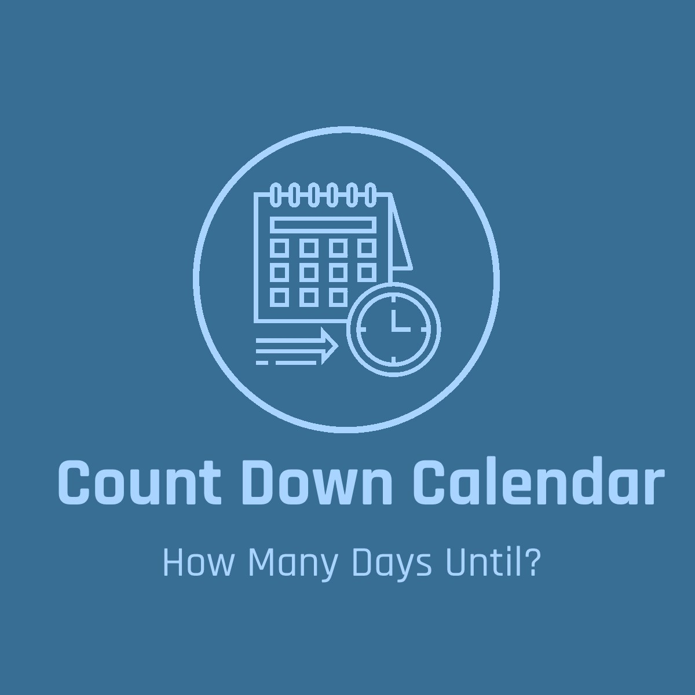

Count Down Calendar
[User's Country] Major Holidays

Here you'll find quick and easy information regarding the exact days until each major holiday in your country. Perhaps you have the question "How many days until?" and/or "My online order says it will be here in this many days, will my gift arrive in time for this holiday/event?" all of these questions and more can be easily answered. This information can be easily shared among friends and family. You can also know the number of days for other countries, default country is set to U.S.A. Unlike other sites, here you'll find information for all your country major holidays, not just one or a few. In order to get the best experience using this page, you'll need a working mouse and keyboard and/or if on mobile, make sure your touchpad and virtual keyboard is accessible/permissions enabled. If you want to know the full time details of the major holidays you can find that information on the second page and/or if you'd like to enter your own specific event you can do so on the third page.